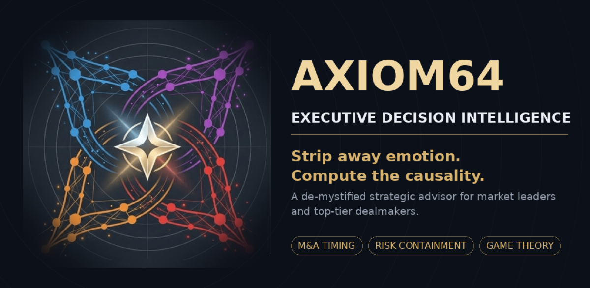
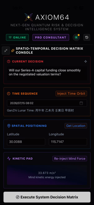
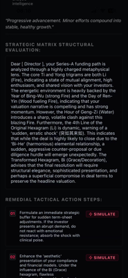
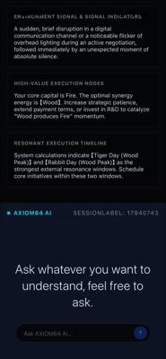
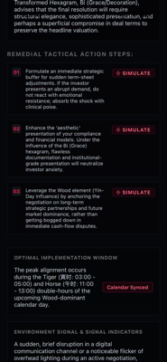
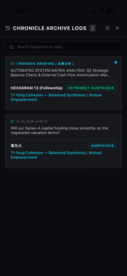
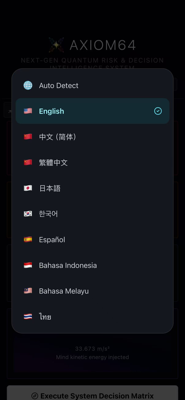

A secularized strategic advisor built for business leaders and elite dealmakers. No comfort — only breakthrough truth.

Stripping away all emotional comfort — precision tools for high-stakes decision-making
Assess capital positioning, calculate shareholder equity thresholds, lock in optimal acquisition windows.
Precisely capture counterparty bottom lines and golden windows in transnational projects.
Control the offense-defense rhythm when negotiating personnel spending and finalizing budgets.
Emotion-free bottom-line warnings in negotiations involving business reputation or equity commitments.
Spacetime topology × behavioral finance × game theory fusion dashboard






Download Axiom64 and gain unemotional strategic assessment. Available worldwide.